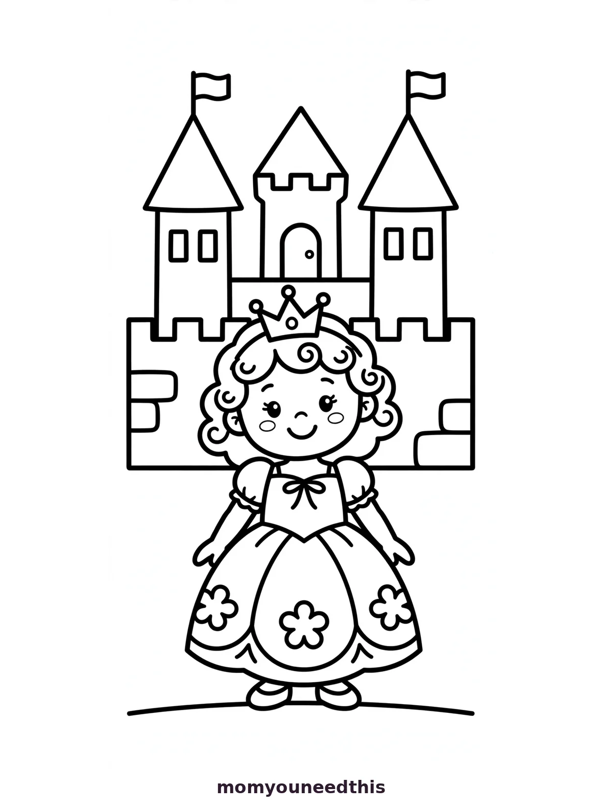
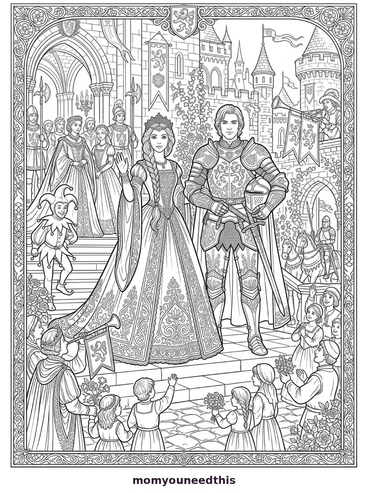
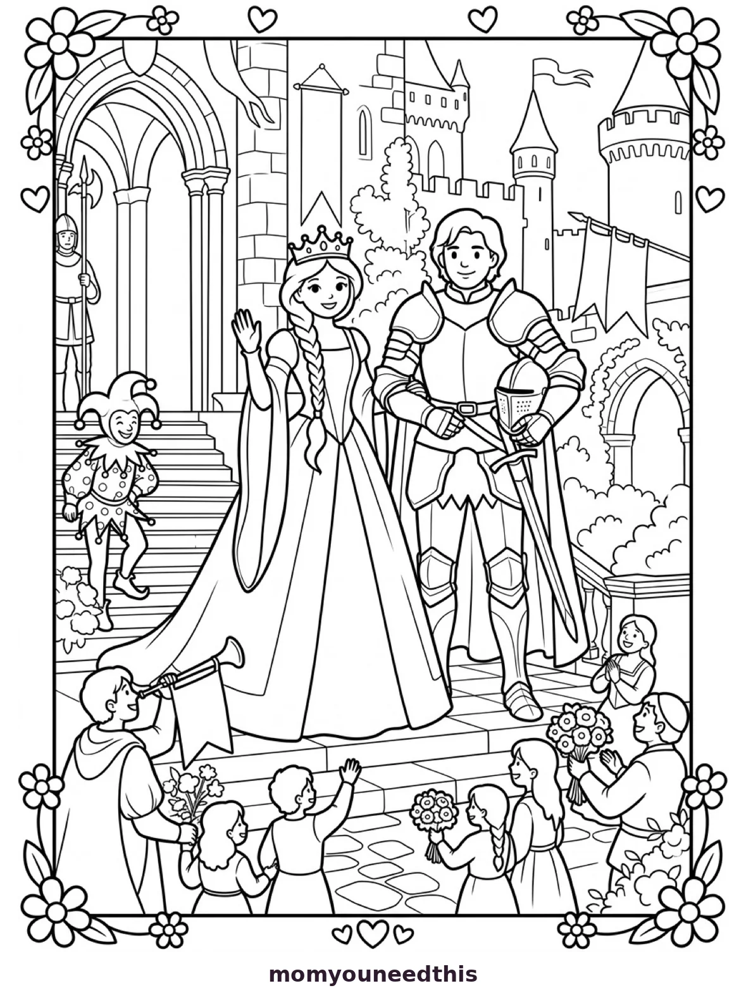
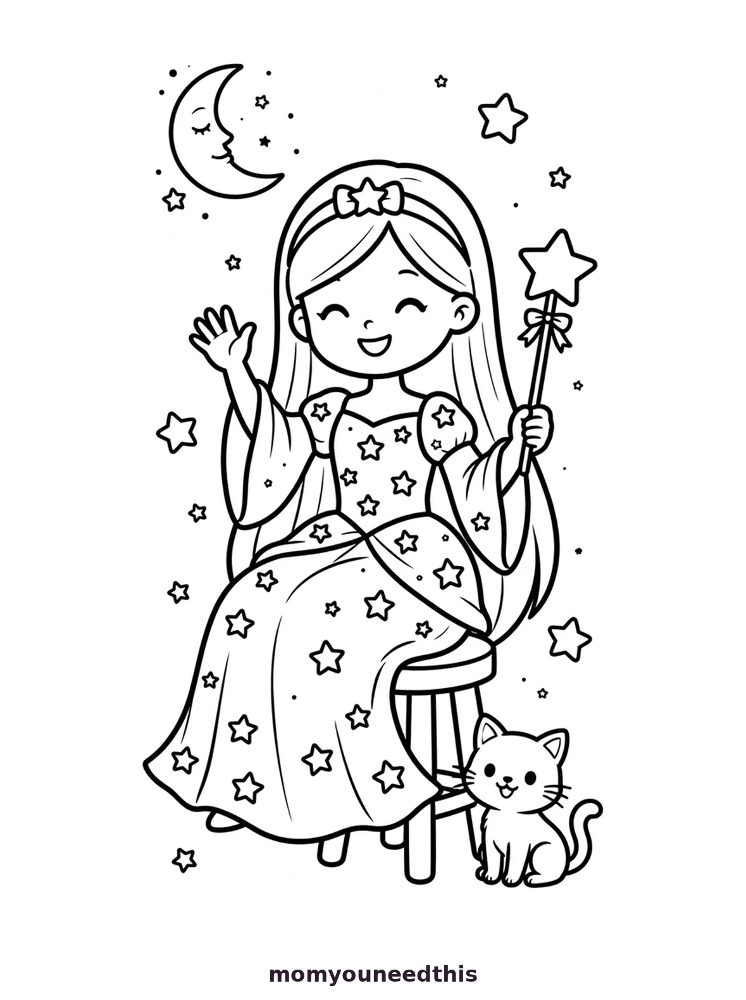
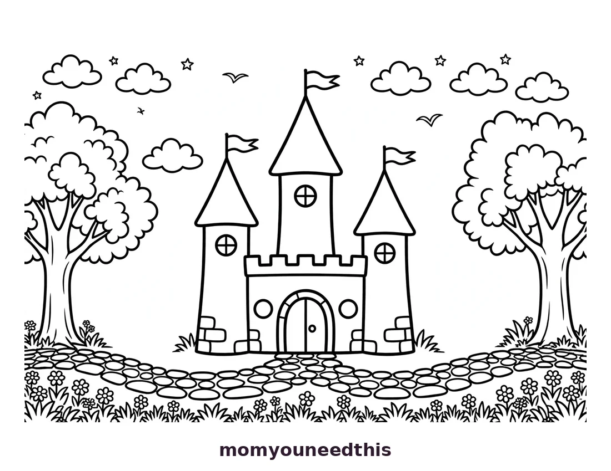

Free Princess Coloring Pages
Looking for free princess coloring pages? Download our free original Princess coloring page below — no signup needed. Just tap download, print at home, and let the coloring fun begin! Each princess coloring pages printable below is a full letter-size sheet, so there is plenty of room for crayons and markers. Printed together, these princess coloring book pages make a little royal coloring book — five designs, from simple to detailed.
Quick Answer
Five free princess coloring pages are ready here, from simple to detailed, and each one is a full letter-size sheet. Color a princess with a magic wand, two princess-and-knight scenes and a fairy-tale castle. They suit toddlers and preschoolers, and the detailed pages stretch older kids too. Print the free PDFs at home — no signup.
At a Glance
- Ages: Toddlers and preschoolers
- Activity: Princess coloring pages to print and color
- Skills: Coloring, creativity and fine motor practice
- Format: Printable coloring pages (PDF)
- Cost: Free, no signup
👑 How To Use This Page
- Browse the list and pick a coloring page your child will love.
- Tap the download button to save the free coloring page to your device.
- Print on letter-size paper — print a few different designs for variety.
- Color together with crayons or markers and display the favorites.
👑 Princess Coloring Pages

🎨 Download Your Free Princess Coloring Page
A cute, original princess coloring page made for little hands — bold outlines, big spaces, zero signup.
⬇️ Download Free Coloring Page 🖨️ Print🎁 Free printable for toddlers & preschoolers

🏰 Princess and Knight — Detailed Coloring Page for Older Kids
A detailed princess and knight castle scene with lots to color — perfect for older kids who love intricate pages.
⬇️ Download Detailed Princess & Knight Page 🖨️ Print Detailed Page🎁 Free printable — detailed scene for older kids

🏰 Princess and Knight — Medium Coloring Page
A step up from the simple page — more castle, more characters, still easy lines. Great for kids who want more to color but aren't ready for the detailed one.
⬇️ Download Medium Princess & Knight Page 🖨️ Print Medium Page🎁 Free printable — medium difficulty

👸 Princess Sitting with Wand Coloring Page
A simple princess sitting on a stool, waving and holding a magic wand — big shapes and easy lines for little hands.
⬇️ Download Princess Sitting Page 🖨️ Print Sitting Princess🎁 Free printable for toddlers & preschoolers

🏰 Castle Coloring Page
A simple fairy-tale castle with three towers, flags, and flowers — a wide landscape page with big spaces to color.
⬇️ Download Castle Page 🖨️ Print Castle🎁 Free printable for toddlers & preschoolers
Print in Minutes, Color Right Away
Five designs, five different jobs — pick by how much detail your child can handle. Two have a handful of big shapes; one is a castle scene built for older kids.
For toddlers and young preschoolers, print the princess sitting on a stool: a star-patterned gown, a wand, and a small cat beside her, all in big open spaces — and the easiest figure for the Beyond Coloring puppet project. The castle sheet suits the same ages: three towers, flags, an arched door, and round windows on a wide landscape page, nothing fiddly.
The medium princess-and-knight page steps up: a waving princess beside an armored knight, plus a jester, a guard, and children framed by flowers and hearts. Save the detailed version — a crowded castle scene with jester and guards — for older kids; it is where the Color Guide's two-shade hair and one-color-per-jewel ideas pay off.
See princess sheet for more.

🎨 Princess Color Guide
A set of princess coloring book pages rewards a color plan: pick the dress colors first, then let everything else follow. These cute princess coloring pages look best when your child picks colors on purpose instead of grabbing the nearest crayon. Start with skin: peach for light skin, warm brown for medium skin, deep brown for dark skin. If the crayon box has no good match, layer a light peach under a soft brown to mix a new shade.
For dresses, pink is the classic, but a blue princess or a purple princess is just as royal. Gold or yellow works for crowns, belts, and shoes. If your child wants a blue princess, let her go for it — there is no rule that princesses wear pink.
Hair can be yellow, brown, black, or red. Try two shades on the same head: a darker shade on the outside, a lighter shade in the middle, for a little depth. Crown jewels look best in one bright color each — red, blue, or green — instead of every jewel a different color.
✂️ Beyond Coloring: 3 Princess Activities
These princess coloring pages do not have to end when the coloring ends. First, turn a finished princess into a puppet: cut around the outline, tape it to a popsicle stick or a straw, and act out a two-minute story together. Ask what the princess finds in her castle — a dragon, a lost crown, a hidden door — and let your child finish the tale.
Second, make a paper crown to match the colored dress. Cut a strip of paper, color it the same shade as the dress, add gold triangles or drawn jewels, and tape the ends together. A crown that matches the page makes the whole afternoon feel like one project.
Third, match the activity to the age. Toddlers can scribble inside the big open spaces and name colors as they go. Four- and five-year-olds can try patterns — stripes on a dress, dots on a crown. Five- and six-year-olds can try shading: press harder on one side of a dress, lighter on the other.
❓ Princess Coloring Pages FAQ
Are these princess coloring pages really free?
Yes — the coloring page on this page is a free original printable from MomYouNeedThis. Nothing here costs anything.
What ages are these coloring pages for?
They are perfect for toddlers, preschoolers, and young kids. Choose simpler designs for little ones and more detailed pages for older kids.
How do I print a coloring page?
Tap the download button above to save the free coloring page, then print it. Regular letter-size paper works perfectly. The print button opens the full-size page in a new tab if you prefer to print from there.
Can I reprint a princess sheet my child wants to color again?
Yes — save the princess printable to your phone or computer once, then reprint it whenever your child wants another try with new colors.
Are princess coloring pages good for toddlers?
Yes — princess coloring pages with big outlines and simple shapes are a sweet fit for toddlers and preschoolers. Start with crayons, keep sessions short, and praise the coloring, not perfection.
How do I print this princess coloring pages printable?
Download this princess coloring pages printable, then print it on letter-size paper with your normal printer settings. Plain paper works well, and printing a few copies keeps extras on hand.
Is this princess coloring pages free printable really free?
Yes — this princess coloring pages free printable is free to download and print, with no signup and no payment. Just download it and color.
Are these free princess coloring pages really free?
Yes — these free princess coloring pages are free to download and print from MomYouNeedThis, with no signup and no payment.
What ages is this princess printable for?
This princess printable is best for toddlers, preschoolers, and young kids who love big, simple shapes. Older kids can add details and patterns with colored pencils.
Are cute princess coloring pages good for preschoolers?
Yes — cute princess coloring pages with big outlines and simple shapes are a great fit for preschoolers. Keep sessions short, offer crayons, and let your child lead.
Are these princess coloring book pages free to print?
Yes — these princess coloring book pages are 100% free to download and print at home. No signup or payment needed.
Where can I find a princess coloring pages printable for my child?
Right here — this page has five free designs to print, from a simple princess with a wand and a fairy-tale castle for little hands to a detailed princess and knight scene for older kids. Just download and print on letter-size paper.
🔗 More Free Printables You’ll Love
- Free Alphabet Coloring Pages Free printable alphabet coloring pages for little learners.
- Free Letter B Coloring Pages Free printable letter b coloring pages for little learners.
- Free Letter C Coloring Pages Free printable letter c coloring pages for little learners.
- Free Math Coloring Pages Free printable math coloring pages for little learners.